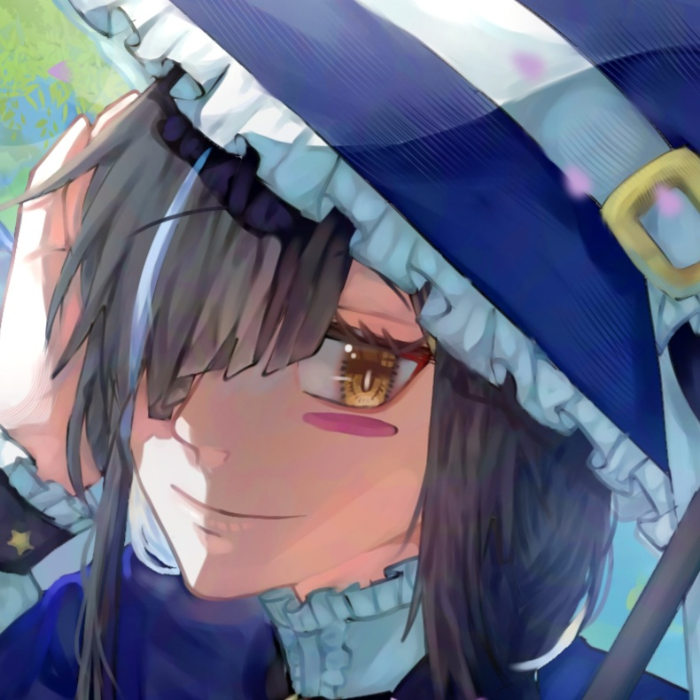
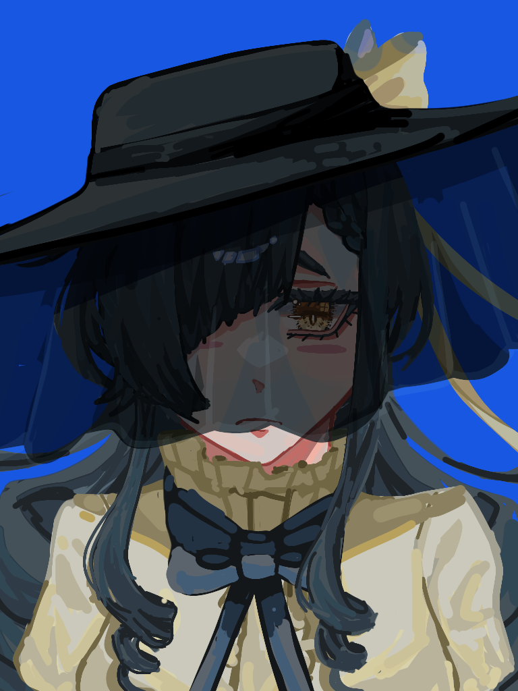
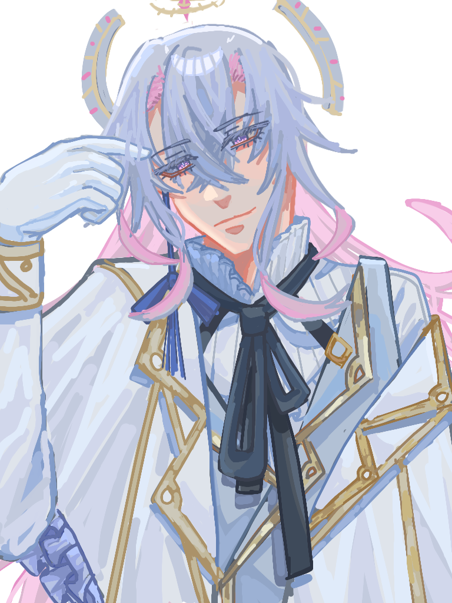

|  | Hello, my name ZSA345__ I am a hobbyist OC artist who draws in anime art style ...
I start to really like to draw when i was a kindergartener due to my teacher shows me how she draws on ms paint and guide me how to coloring.
I mostly do overpaintings since my favs artist mostly do painting likes. I draw using my phone and use finger along with IbispaintX, most of times i draw my OC's that mostly males. Im more active at Instagram most of times, i do have other socials like twt and Facebook. |
| About Commission...,its always open but if it would take long i will tell you if its possible or not. My commissions has around 1000px+ size canvas since my phone is laggy and a bit old, you can order throught the Commission page, throught Vgen or directly throught socials. The time i work is from 9.00AM-8.00PM on WIB time, there's a clock on the sidebar that shows indo time if you want to check. |
|  | The Female mascot of ZSA345__ ....
A elegant noble looking lady that tend to hide her face using hat and veil. She looks myaterious but actually just a shy one....who loves money. She is ZETIO sister, unlike ZETIO her fashion sense is a bit...bad most of her clothes are cordinated by ZETIO. Beetween the two Z.S.A is more friendly and approachble, thought her low self esteem makes her tend to avoid interaction. |
|  | The Male mascot of ZSA345__ .... A elegant looking gentleman wh tend to use white clothes. He looks majestic.....but he's a sassy one that would give side eyes to bad outfit coordinates, just like his sister Z.S.A he likes money. He tend to fuss about Z.S.A confidence and fashion sense, he really just wants her to be more confident. |